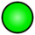
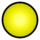
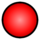

De: La Frikipedia, la enciclopedia extremadamente seria.
De: La Frikipedia, la enciclopedia extremadamente seria. De: La Frikipedia, la enciclopedia extremadamente seria.

|

|
|
|
|
|
|
|
|
|---|---|---|---|---|---|---|---|---|
| Template Squad | Plantillas administrativas | Navboxes | Plantillas temáticas | Infoboxes | Frikiboxes | Plantillas para usuarios | Emoticonos | Directorio |

Aquí se encuentran las plantillas que son únicamente para uso de las paginas de usuario
Pon esta plantilla en tu página de usuario y/o en tu discusión de la siguiente manera: {{Estado actual}}. Cuando lo pongas, al lado del título de la página aparecerá un enlace que dice Mi estado actual. Cliquea este enlace y pon el número que corresponda a tu estado:
| Estado | Nº |
|---|---|
| Conectado  | 1 |
| En el chat  | 2 |
| Ocupado | 3 |
| Desconectado  | 4 |
| Inactivo |
5 |
Por ejemplo, pones 1 en la página de tu estado actual para poner que estás conectado, 2 para poner que estás en el chat, etc. Dudas aquí.
Copia este jodío texto, pégalo en tu página de usuario y llena los parámetros con los datos. Los nombres de los colores se ponen en inglés (lo pongo GRANDE para que lo lean). Cualquier duda dale aquí.
{{Infobox frikiusuario
| color =
| color_letra =
| color_borde =
| nombre =
| imagen_frikiusuario =
| descripción =
| registro =
| contribuciones =
| artículos =
| obra_maestra =
| favorito =
| objetivo =
| notas =
}}
Este truco sirve para hacer una especie de introducción o cartel de bienvenida, el cual se mostrará por 5 segundos y luego el visitante será redirigido automáticamente a la página que especifiques (ya sea tu userpage o discusión).
Los pasos son:
Usuario:IP anónima/{{#Widget:Precarga|pagina=AAA}} donde AAA representa la página a la que estás introduciendo (siguiendo con el ejemplo, sería {{#Widget:Precarga|pagina=Usuario:IP anónima}}).
Puedes tomar como ejemplo las siguientes precargas: Usuario:Gororo/ o Usuario:Shadowmura/
Para enchular aún más tu página de usuario o firma, puedes usar transiciones que sirven para definir dos estados de un objeto, de forma tal que al pasar el cursor del ratón por encima del objeto cambie de un estado al otro, y que al quitarlo vuelva a su estado original. Los parámetros que recibe son:
Vamos con un ejemplo: haremos un recuadro blanco con un texto negro, tal que al ponerle el cursor encima pase a ser negro con texto blanco. Los datos son:
El código sería:
{{#Widget:Transicion|nombre=cambio|formato=padding:20px|desde=background:White; color:Black|hasta=background:Black; color:White|tiempo=1|contenido=<cambio>BIBA LA FRIKIPEDIA</cambio>}}
y el resultado es
Podemos jugar un poco más y hacer que el recuadro se mueva. Para eso definimos en la parte fija position:relative. En desde, ponemos top:0 para que en estado normal se encuentre donde debe estar y en hasta ponemos top:-10px para que se mueva 10 pixeles hacia arriba. Tenemos que cambiar el nombre para que no se copie la transición del anterior, vamos a llamarla cambio2. También podemos poner más de una frase con estos cambios, cada una delimitada por las etiquetas <cambio2> </cambio2> que es el nombre que definimos. Como quiero que el efecto sea más rápido y tarde medio segundo, defino tiempo como 0.5 (se usa punto y no coma para separar los decimales, el cero puede omitirse)
{{#Widget:Transicion|nombre=cambio2|formato=padding:20px; position:relative|desde=background:White; color:Black; top:0|hasta=background:Black; color:White; top:-10px|tiempo=.5|contenido=<cambio2>F</cambio2><cambio2>R</cambio2><cambio2>I</cambio2><cambio2>K</cambio2><cambio2>I</cambio2>}}
y el resultado es
Este artilugio no acepta código wiki, así que debes buscar el equivalente CSS, por ejemplo para texto en negrita debes utilizar la etiqueta b de esta forma: <b>texto en negrita</b> y para hacer [[Página de destino|Enlace visible]] debes usar la etiqueta a de esta manera: <a href="/w/index.php?title=Página de destino">Enlace visible</a>
Hagamos desaparecer una imagen. Para ello hay dos formas de hacerlo: se puede usar desde=opacity:1|hasta=opacity:0 para que se desvanezca o desde=visibility:visible|hasta=visibility:hidden que solo lo desaparece de golpe (equivale a lo de opacity con tiempo=0). Usaremos la primera porque es más gonito. Los valores son:
{{#Widget:Transicion|nombre=fantasma|desde=opacity:1|hasta=opacity:0|tiempo=3|contenido=<fantasma><img src="/images/3/3a/Murapedia.png" width="135px" height="135px" /></fantasma>}}
da como resultado
Para avisar a los demás usuarios que no estás haciendo nada por algún motivo.
| USUARIO INACTIVO Este usuario está inactivo debido a que |
{{Usuario inactivo|Motivo de la inactividad|Tiempo durante el cual vas a estar inactivo}}Autor(es):